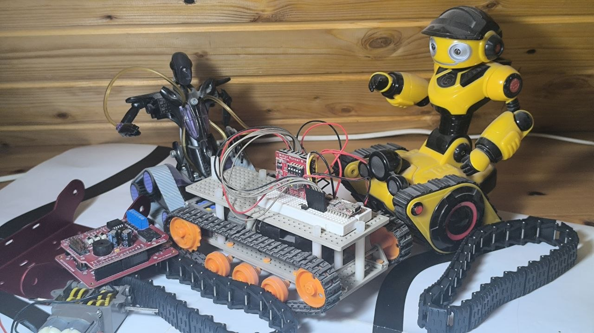
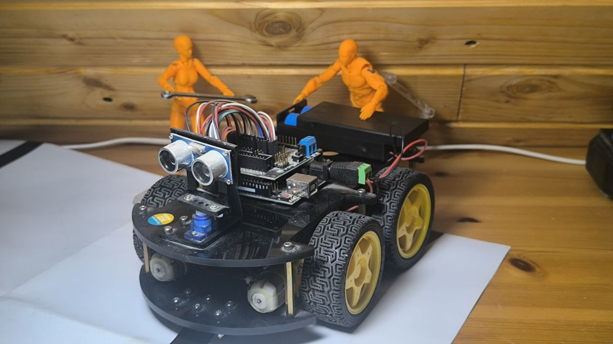
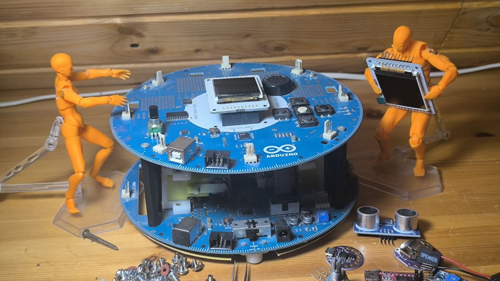
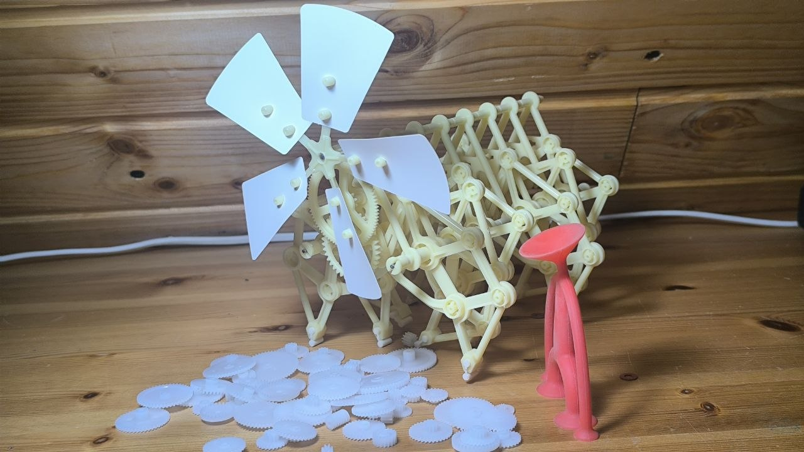
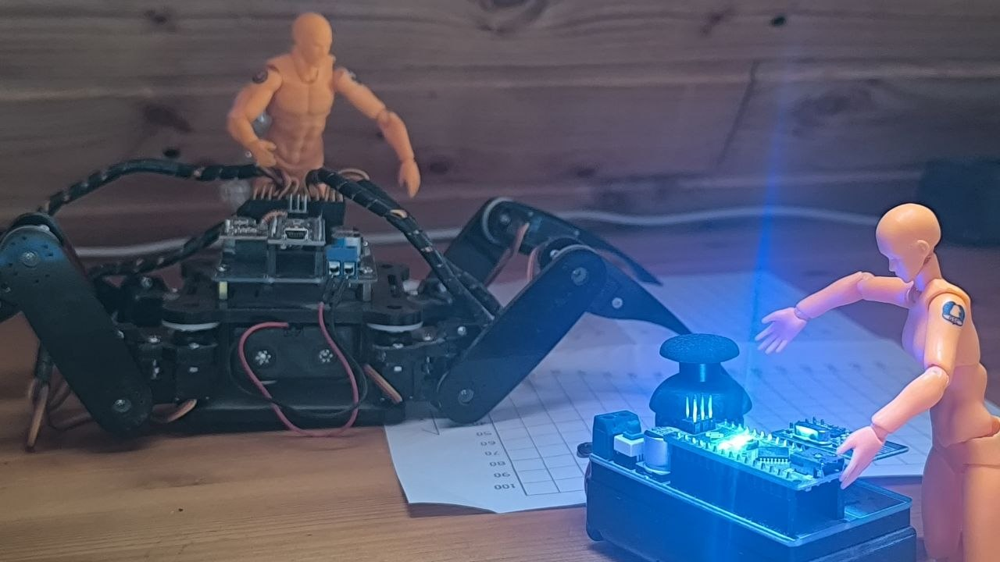

The tracked breadboard robot
About as bare as a robot gets: a tracked chassis with a breadboard bolted directly on top, wired by hand rather than mounted on a proper PCB. No enclosure, no polish — just motors, a controller, and exposed wiring doing exactly what it needs to and nothing more. The kind of build that exists purely to test an idea quickly.

The ultrasonic 4WD car
A four-wheel-drive car chassis with an ultrasonic distance sensor mounted up front, doing basic obstacle detection and avoidance. A step up in polish from the breadboard robot, and a good, simple demonstration of the sense-then-react loop with real, if primitive, autonomy.

The Arduino Robot
The official round-base Arduino Robot — two stacked circular PCBs, one handling motor control and one carrying the joystick, buttons, and LCD screen for direct interaction. Unlike the other builds here, this one came from Arduino as a real product rather than being assembled from raw parts, but it earns its place in this "from scratch" collection as the most capable, most tinkered-with base in the pile.

The windmill mechanism
A four-bladed kinetic mechanism, mostly mechanical rather than electronic — a reminder, same as the Yeti on the classic robotics page, that not everything interesting in this collection needs a microcontroller behind it. Sometimes gearing and linkages are the whole point.

The spider hexapod
The most mechanically ambitious build in the collection: a six-legged walking platform, each leg independently actuated by its own servo, controlled to produce a coordinated walking gait. Getting six legs to move in a stable, non-tripping sequence is a genuinely harder control problem than it looks, and this is the build that pushed furthest into that territory.

Every purchased kit on this site comes with a promise baked into the box — build this, and you'll get that. These builds didn't have that promise. They came from having parts on hand, a rough idea, and enough stubbornness to get something moving. That's a different kind of learning than following an instruction booklet, and honestly, closer to what "lab automation" actually ends up requiring later — building the thing that doesn't exist yet, not assembling the thing that already does.